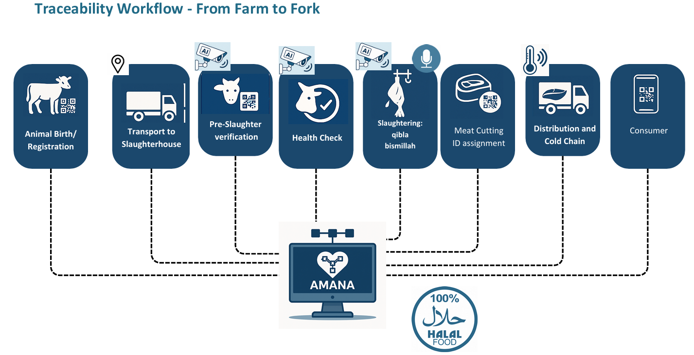

Amanah Halal Compliance Engine
Saudi Vision 2030 · real-time edge vision + audio AI for slaughterhouse halal monitoring.
10,000+animals processed in live production
across multiple Saudi branches
across multiple Saudi branches
Computer VisionEdgeCloudMLOps

The problem
Halal compliance across the Gulf hinges on several things being true at once the animal is healthy and correctly identified, the slaughterman is verified, the carcass faces the Qibla, and the takbeer is recited. In practice this is judged manually, varies between operators, and leaves no audit trail an authority can trust.
What I built & owned
I designed and shipped the end-to-end edge vision + audio system trained the models, owned ONNX quantization for the Raspberry Pi, and built the Dockerized CI/CD that pushes updates to every branch. Two real-time engines run on-device, backed by environmental sensing and three role-based dashboards.
Inside the system
- Pre-slaughter engine animal detection & type, global ID and tracking, health check, orientation, and alive / deceased state.
- On-slaughter engine slaughterer face verification, takbeer audio detection, Qibla alignment, and knife-sharpness check.
- Environmental sensing per-zone temperature, humidity, and CO₂ monitoring.
- Three dashboards Super Admin (slaughterhouses, devices, users, events), Slaughterhouse Admin (zones, shifts, slaughterers, animal auditing), and Government Admin (compliance parameters, certifications, audits).
Impact
10,000+
animals across Saudi branches
15 FPS
real-time on Raspberry Pi
90%+
accuracy across all models
~98%
infra cost cut ($3.5–9.5k → $50–150/mo)
Tech stack
YOLOv11RTMPose-TinyEfficientNetOrient AnythingONNX RuntimePineconeDockerAWS EC2/LambdaCI/CD
Architecture & workflow
System flow edge to cloud